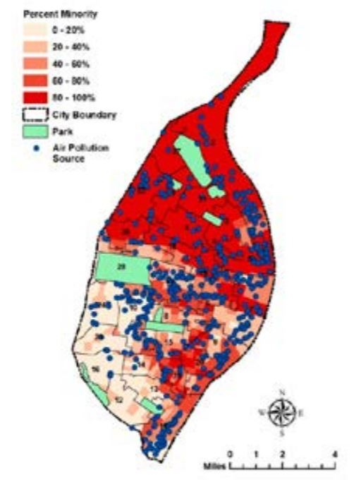
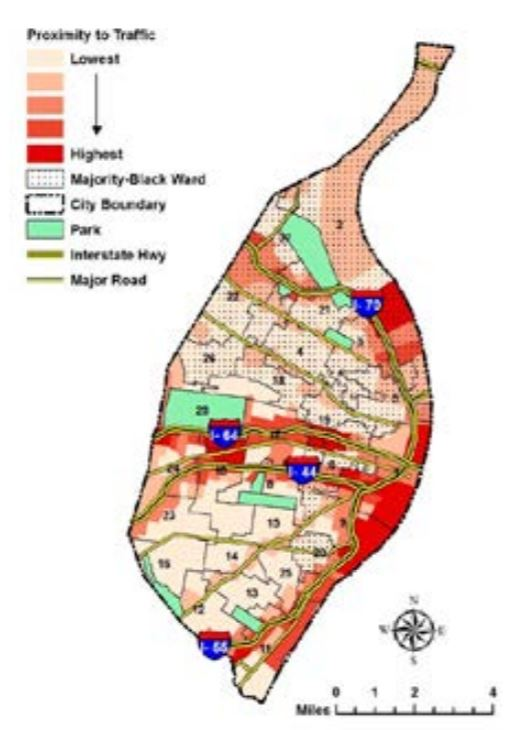

Air pollution in St. Louis comes from power plants, vehicles, and building demolitions, most of which are located in neighborhoods of color. St. Louis has violated the federal air standard for ozone since 1979, and the federal fine particle pollution standard from 2005 to 2017, subjecting many black neighborhoods to the harmful effects of air pollution.
Neighborhoods along the Missippi River, which have high percentages of people of color, are especially affected by this issue since there are many clusters of pollution sources in their area.
In addition, many majority-black neighborhoods are near major highways, which means they are always exposed to air pollution from vehicles.
Finally, more demolition permits are issued in North City, where there are more black residents, than in other areas. These demolitions can cause extremely high levels of harmful dust, and can spread lead into the surrounding area if done poorly.
Can contribute to:
Below is a map showing where all the air pollution sources (power plants, vehicles, etc.) in St. Louis are located. Many clusters of air pollution sources are along Mississippi River, where there are many black communities.
The map below shows which areas have the highest and lowest proximity to traffic. As seen in the map, residents near Mississippi River are affected by air pollution again from vehicles on main highways.
